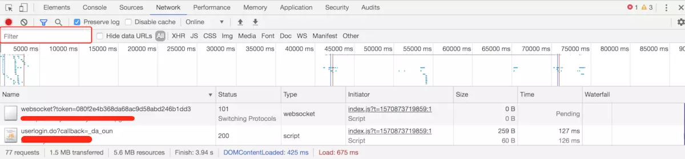
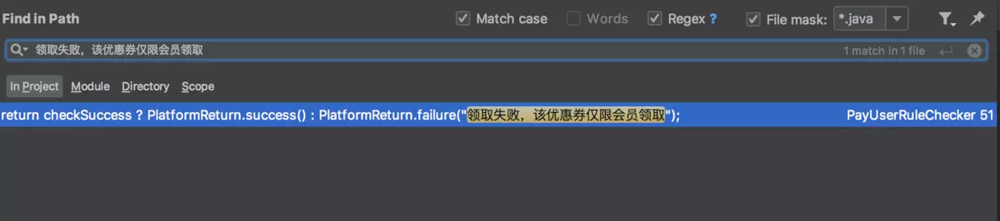

让我掉下眼泪的 不止内存泄漏
让我夜夜不眠的 不止你的需求
明天还要改多久 你攥着我的手
让我感到为难的 是善变的需求
发布总是在半夜 回滚是永远的愁
错误(Bug)随时的暴漏 困扰着我心头
作为程序员，以上这些场景你一定都经历过。今天就来聊聊如何快速定位问题。
先划重点，下文所写都是一家之言，本人工作经验不多，语言表达能力有限，如果写的不好，还望轻喷。另外，本文所讲都是站在Java后端开发者的角度。
下文所讲内容，都会围绕以下几个真实案例来做举例分析，先描述一下具体案例：
案例1：App首页白屏。
详细描述：App、H5、小程序首页都是由同一个后端接口负责提供数据。测试大佬反馈说，App首页白屏了。
案例2：小程序商品会员价显示不正确。
详细描述：测试大佬反馈，某商品会员价显示不正确，客户端展示会员价为0元。为什么会员价0元是不正确的呢？因为我们在系统中做了限制，会员价必须大于0元。
案例3：优惠券领取不了了，弹窗显示“领取失败，该优惠券仅限新人领取”！
详细描述：这是一个领取优惠券的功能。用户可以通过该活动领取优惠券。用户在领取优惠券时，页面弹窗提示：”领取失败，该优惠券仅限新人领取“。同时，测试大佬反馈说，这个账号就是一个新人账号，是刚刚注册的用户。
案例4：某用户购买的xx评测专栏的评测课无法打开。
详细描述：评测专栏是我司的一个特色专栏，在这个专栏中，有一节评测课。评测课就是让用户做在线试题，用户先进行测试，了解自己状态。测试完成之后，系统会根据用户的答题情况，向用户推荐合适的专栏课程表，供用户学习。
背景交代完毕，那如果是你，在遇到这几个问题的时候，会怎么处理呢？
当测试大佬反馈问题时，首先要做的就是复现问题。如果问题能复现，好嘛，已经解决一大半了，作为开发，我觉得还是要有这个自信的。能复现的问题，那就一定能修复（修复成本有高低，这个不在本文讨论范围之内哦），实在是找不到Bug代码，我可以一行一行的调试嘛！所以，遇到问题不用慌，淡定淡定。
那如果问题不能复现呢？怎么办？
这个时候，我一般的做法是去查日志。如果日志中有错误信息，我们便可以根据错误信息快速定位到Bug所在的具体代码。那如果这个时候也没有错误信息呢？嗯...我想想，好像也没有别的办法了。问题不能复现，程序没有报错，那只能麻烦测试大佬再多测试一下，看看能不能复现吧。
经过上一步骤，我们已经可以让Bug复现了，那接下来要做的就是快速定位。快速定位？定位什么呢？
一般公司项目开发，都会分后端开发、前端开发、APP开发，这里说的快速定位，指的就是要快速定位到是三端中的哪一端出的问题。
那如何快速定位呢？
如果你熟悉这个功能的整体流程，清楚整个功能会经历哪些步骤、哪些模块，这对你去快速定位问题是非常有帮助的。当然，也有一些监控工具可以来帮助开发者做快速定位，帮助开发了解整个流程。例如：sentry、skywalking等。
举个栗：
案例1：App首页白屏。
案例2：小程序商品会员价显示不正确
这两个问题反馈过来的时候，我打开app、H5、小程序都看了一下，发现：只有app的首页白屏了，H5和小程序的首页都是好的，考虑到App、H5、小程序首页都是由同一个后端接口负责提供数据，那这个问题大概率是app那边的问题，于是请app开发同事帮忙定位一下问题。
而app、H5、小程序这三端都出现了商品会员价显示不正确这个问题，于是我断定，这大概率是一个后端的逻辑问题。三端都写错代码取错了会员价这个概率应该不大。
案例4：某用户购买的xx评测专栏的评测课无法打开。
这是一个产品反馈的线上问题，由测试大佬提到开发这边的时候，测试大佬当时并不能复现。由于评测课的特殊性，它是需要由用户做题输入到系统，系统解析用户答题情况，然后做系统推荐。
这是一个典型的与用户行为数据相关的问题，可能只有具有某些特性行为、数据的用户才会遇到。遇到这种问题，测试也是很难复现的。可以查一下日志，看看有没有报错信息。
当时遇到这个问题的时候，由于项目接入了sentry平台，开发这边也是收到了系统异常报错的邮件提醒，很快速的就找到了原因。
好，经过上面几轮的大致判断，这大概率就是一个后端Bug了。现在我们需要做的就是，快速定位到出问题的具体接口。如果移动端，就用Charles抓个包，H5端就直接打开Chrome控制台。
so easy~~ 妈妈再也不用担心我找不到接口啦~~ 当然了，在实际操作过程中，可能并没有这么简单。前端渲染页面可能请求了N多个接口。
举栗子
案例2：小程序商品会员价显示不正确。
因为app、H5、小程序三端使用的是同一个接口来获取商品相关信息，我会优先在H5平台调试，毕竟不用开Charles，方便嘛~~

遇到问题，快速响应和解决才是重点，特别的线上问题。所以有时候这个功能可能不是你开发的，那么如何在这么多请求中如何快速定位找个具体接口呢？这就要靠你的经验和聪明的大脑了。
这里就分享一个我的经验吧，不一定适合所有场景。就拿这个案例来说：打开商品详情页，打开控制台。基于我对系统的整体了解，我确信一定会有一个接口返回商品的会员价，具体哪个接口我也不知道。
好，这个时候怎么办呢？猜接口！当然了，也不是乱猜。获取商品会员价，那这个接口大概率需要前端传给后端一个商品id，那商品id在哪里呢？商品id一般都会出现在当前页面的URL里。于是，在控制台的filter框中（图中已标红）输入商品id。这个时候已经可以过滤掉大部分的请求了。
接下来你要做的，还是猜！看看剩下这些请求地址名称，猜一下他的作用；看看接口返回的字段名称，有没有名称像“会员价”字段，有没有返回值和前端显示的会员价一样的字段。最后，经过大胆猜想之后，我们要做的就是小心求证，确认我们定位的接口是否正确。
定位到接口之后，我们就可以准备看代码，修Bug啦！
不知道你有没有遇到过这样的情况。打开代码，一眼望去，这个代码这么长，而且之前也不是我写的，我该怎么办呢？下面我们就来讲一下如何来快速定位Bug代码。
举栗子：
案例2：小程序商品会员价显示不正确。
经过我们之前一顿猛如虎的操作，终于定位到了问题。
//接口返回数据 { "price":9900, "discountPrice":8900, "vipPrice":0, }会员价显示不正确，也就是
"vipPrice":0这个字段有问题。打开代码，找到该接口对应Controller，找到该Controller返回的VO，找到VO中的
vipPrice字段的setter方法，鼠标右键find Usages。恭喜你，这个时候你已经找到了这个vipPrice的值是在哪一行被设置的了，将重点聚焦于此即可，Bug就在这个代码附近了。看一下这个vipPrice的值是怎么计算出来的，是不是计算逻辑写错了。如果这个时候，很不幸Controller的VO是通过
BeanUtils这些工具类将属性映射过去的，那么你运行find Usages可能就找不到属性是在哪里被设置的了。唉，写代码时用的爽，出问题时泪汪汪。那只能查这个VO是在哪里被用到了，然后去代码里查了。
案例3：案例3：优惠券领取不了了，弹窗显示“领取失败，该优惠券仅限新人领取”！
如果“领取失败，该优惠券仅限新人领取”这个文案，是你的接口返回给客户端的，那么，这个时候你要做的就是，IDEA全局查找这个关键词。

哈哈哈，恭喜你，快速定位了，在
PayUserRuleChecker的第51行，是不是很简单？
既然已经定位到具体的代码了，那么就可以进行问题修复了。这个时候就要看个人经验啦，有经验的程序员可能一眼就能看出来问题。
这里列举一些需要注意的点：
借用测试大佬的一句话："没bug是不可能的，这辈子都不可能没bug的"。
而我们要做的，一是要尽可能的减少Bug，避免问题重复出现；二是要遇到问题，快速修复。千万不要害怕Bug，更不要担心出Bug就不敢写代码。
最后的最后，就来做个简单总结：
遇到问题不要慌，只要能复现，就能修复
APP、H5、小程序三端快速定位，找到问题负责人
定位问题接口，找到问题代码
debug then fix
总结经验，避免再犯
欢迎关注公众号：